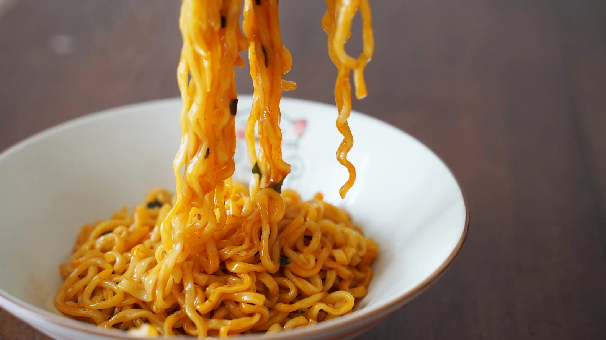

Fancy Instant Ramen

Description
Ramen is wonderful. We all need something quick to cook up that makes
us feel at home. I like to dress mine up. Follow along and add your own twists.
Ingredients
- 1 package of instant ramen noodles
- Any amount of green onion
- Ginger paste
- Sesame oil
- Kimchi
- Gochugang
Steps
- Bring a cup of water to boil. Add ramen and cook for five minutes (or follow package instructions).
- While cooking the noodles, add other ingredients. Measure with your heart.
- Drain noodles and mix all of it together. Top with chopped green onions.
Return to the Homepage